※一般公開は考えてなかったのでページ構成はメチャクチャもいいところ。 画像数が増えてきたので分割しないといけないかなー…。
2007/2/3
ダッシュいろいろ
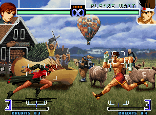
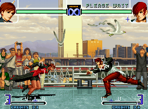
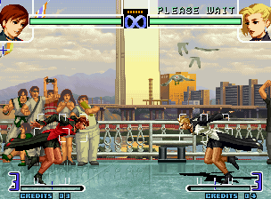
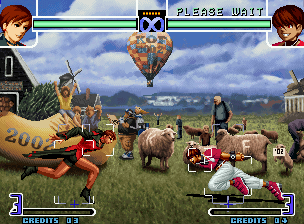
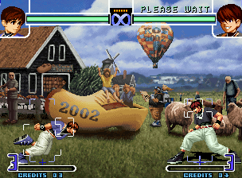
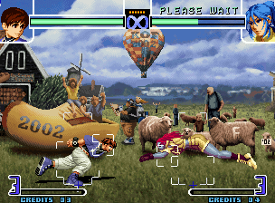
2006/10/27
山崎の弱強MAXギロチン（再録）
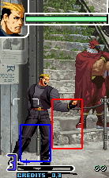
弱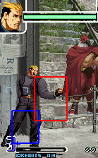
強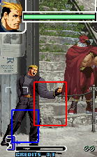
MAX2006/10/10
アンディの幻影不知火
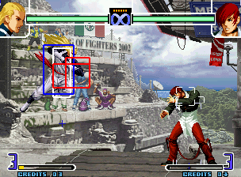 |
弱幻影不知火 強にくらべて攻撃判定が前と下両方に大きい。 |
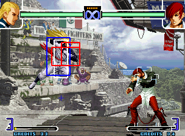 |
強幻影不知火 弱に比べ前方＆下方向への攻撃判定自体は弱いが、めくり性能は明らかにこちらが上。 |
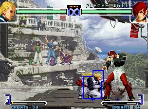 |
弱強幻影不知火の着地の隙 食らい判定が低めになるのが特徴＆特長 レオナのVスラ対策になる（がく島さん情報） |
2006/9/19
ユリの屈みC（1段階目→2段階目）
判定自体は普通ですねぇ（というか、食らい判定はでかいくらい）
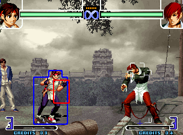
→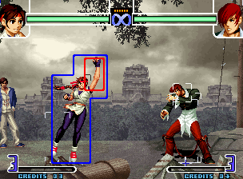
2006/9/14
ロバートの強龍牙
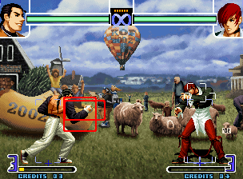
→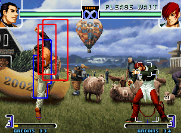
2006/9/14
テリーの強パワーダンク
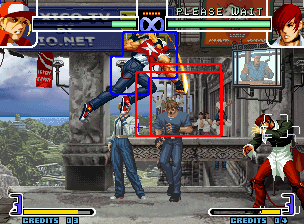
2006/9/13
ジョーの弱強タイガーキック
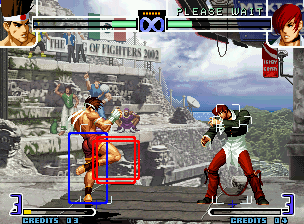 |
弱タイガーキック 弱の利点 |
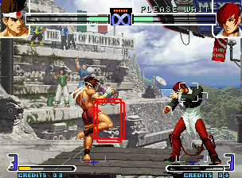 |
強タイガーキック 強の利点 |
2006/9/12
アンディの弱強昇龍弾
弱昇龍弾
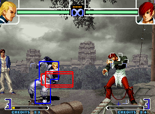
※攻撃判定の枠が2つあるように見えるが、おそらく1つは被当て身投げ判定。強昇龍弾
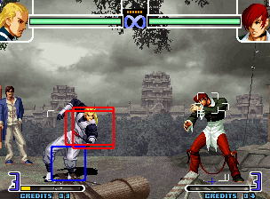
※攻撃判定の枠が2つあるように見えるが、おそらく1つは被当て身投げ判定。2006/9/12
紅丸の小J攻撃
小JA
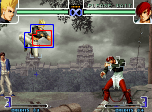
小JB
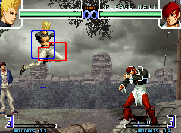
小JC
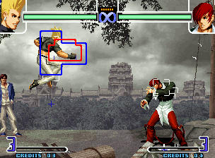
→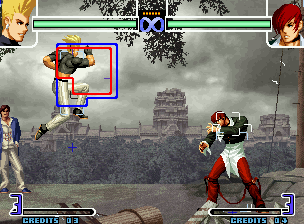
小JD
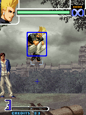
→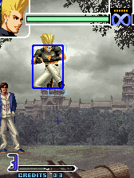
→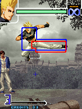
小JC＋D
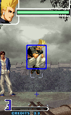
→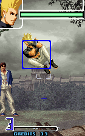
→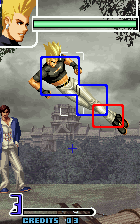
→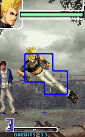
2006/9/12
ビリーの小J攻撃
小JA
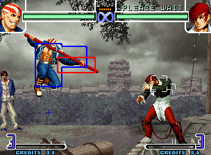
小JB
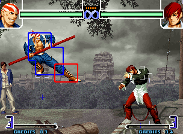
小JC
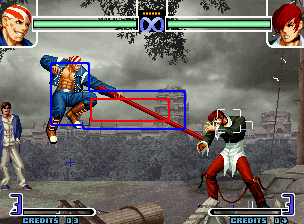
→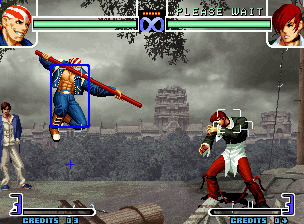
小JD
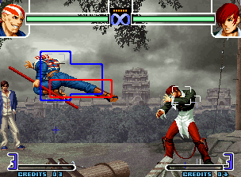
小JC＋D
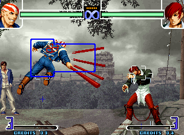
→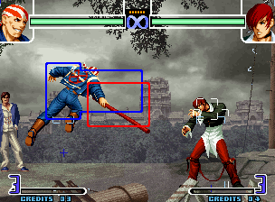
2006/9/10
テリーの小J攻撃
小JA(3, 7)
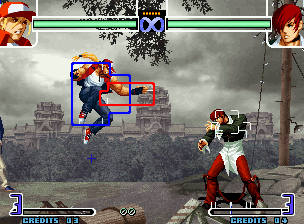
小JB(2, 8)
→
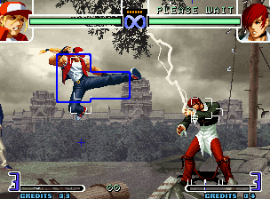
小JC(3, 9)
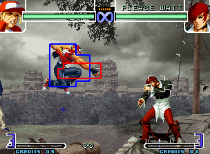
小JD(8, 7)
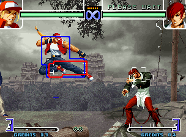
小JC＋D(13, 6)
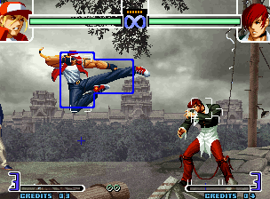
→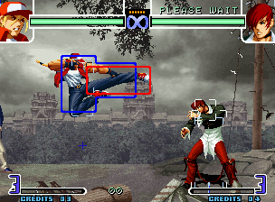
→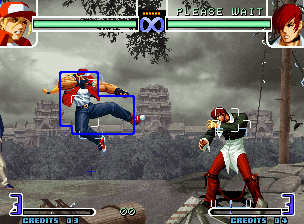
2006/9/9
キムの弱飛燕斬
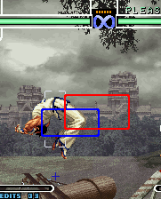
→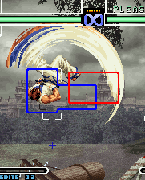
→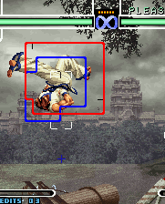
→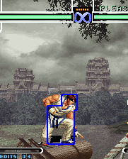
2006/9/9
社の小J攻撃
小JA
小JB
小JC
小JD
→ →
小JC＋D
→
2006/9/9
バイスの遠距離立ち攻撃
遠A
遠B
→
遠C
→ →
遠D
→
2006/9/9
バイスの近距離立ち攻撃
近A
近B
近C
近D
→
2006/9/8
マチュアの屈みC
→
マチュアの屈みD
→
2006/9/8
クリスの遠D
→
2006/9/8
マチュアの近C
→
2006/9/7
五郎の↘C
→
2006/9/6
ビリーの→A
→ →
→
2006/9/4
リョウの遠B
1F目～3F目
4F目～7F目
8F目～9F目（攻撃判定アリ）
10F目～13F目
14F目～16F目
17F目～20F目
21F目～23F目
2006/9/4
バイス：小JCと小JD
小JC
小JD
2006/9/3
ロバート：飛燕龍神脚
弱
強
2006/9/2
山崎：ギロチン（弱/強/MAX）
弱
強
MAX